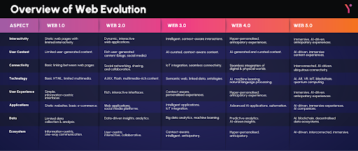

A Web 4.0 ainda é um conceito em desenvolvimento, mas já é discutida como a próxima etapa da internet. Ela propõe uma integração total entre humanos e máquinas, com sistemas capazes de agir de forma autônoma e preditiva. É conhecida também como web ubíqua ou web inteligente, onde dispositivos estarão constantemente conectados, interpretando dados e fornecendo respostas imediatas. A Web 4.0 faz uso intensivo da inteligência artificial, da Internet das Coisas (IoT), do big data e da computação em nuvem. Espera-se que essa web ofereça uma experiência cada vez mais imersiva, intuitiva e personalizada, promovendo uma simbiose entre o ser humano e a tecnologia.
